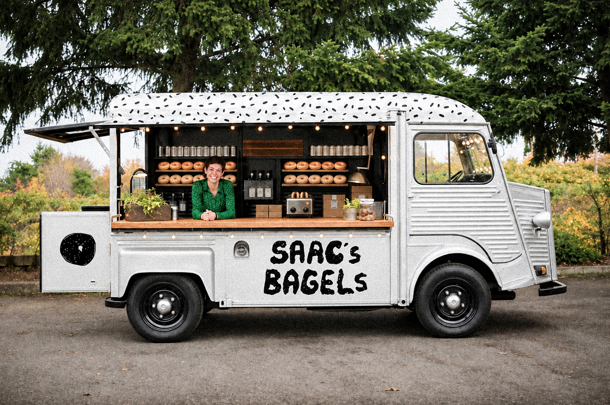
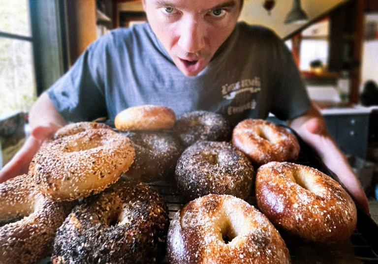

About

Saac's Bagels is a neighborhood bakery dedicated to creating fresh, handcrafted bagels with a slow-fermented sourdough recipe. We use locally sourced, organic ingredients whenever possible to bring out the best flavor in every batch. Our dough is made by hand, shaped carefully, and baked fresh each day to create a chewy, golden bagel with a naturally tangy taste. From our premium flour to our seasonal toppings and produce, every ingredient is chosen with quality and community in mind.

Isaac "Saac" Teixeira, started Saac's Bagels with a simple goal: to bring people together through honest, handcrafted food. A lifelong lover of baking and neighborhood culture, Isaac built this bakery around slow fermentation, quality ingredients, and warm hospitality. He takes pride in every batch, from the mixing and shaping of the dough to the final bake, and he believes a great bagel should feel personal, comforting, and worth sharing.